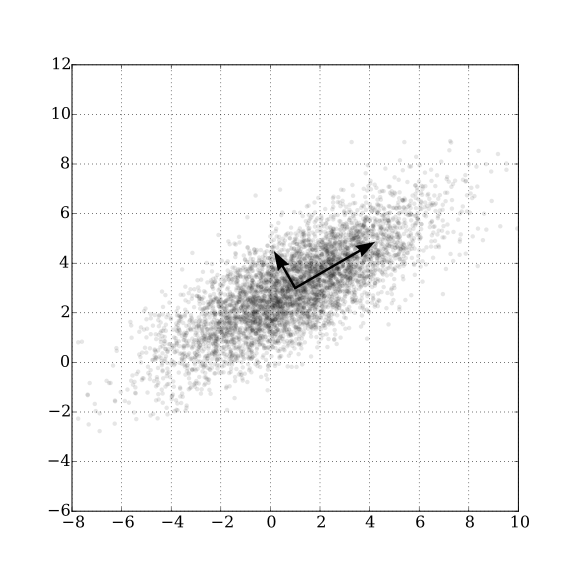

Principal Component Analysis (PCA)
What is PCA?
For a set of data points in high-dimensional space, PCA finds a sequence of directions (eigenvectors of the covariance matrix) such that:
- PC1 is the direction of maximum variance across all data points
- PC2 is the direction of maximum remaining variance, orthogonal to PC1
- PC3, PC4, … continue greedily in the same way
Each direction is called a principal component. The amount of variance along each direction is given by the corresponding eigenvalue \(\lambda_i\).

Source: Wikipedia — Principal component analysis (Wikimedia Commons, CC BY 2.5)
Why Use PCA for Dimensionality Reduction?
For an \(N\)-dimensional dataset, each data point lives in \(\mathbb{R}^N\). But the data may not actually use all \(N\) dimensions — the points might lie near a lower-dimensional subspace.
Key idea: If the variance along some direction is zero (or near zero), then all data points are essentially the same along that direction — so that direction carries no useful information and can be dropped.
Extreme example: Suppose you have 10 points in 2D, but they all lie on a line.
\[\text{2D space} \longrightarrow \text{1D description (the line direction)}\]
You only need one coordinate (the position along the line) to fully describe all 10 points. The perpendicular direction has zero variance and is discarded.
More generally, you keep the top \(k\) principal components that explain most of the variance (e.g., 95%), and discard the rest.
How to Do PCA
Step 1 — Mean-center the data
Subtract the mean from each feature so the data is centered at the origin (see the last section for why).
Step 2 — Compute the covariance matrix
For centered data matrix \(X \in \mathbb{R}^{n \times d}\) (\(n\) samples, \(d\) features):
\[C = \frac{1}{n-1} X^\top X \quad \in \mathbb{R}^{d \times d}\]
\(C\) is always symmetric and positive semi-definite.
Step 3 — Eigendecomposition (via the Spectral Theorem)
By the Spectral Theorem, any real symmetric matrix can be decomposed as:
\[C = Q \Lambda Q^\top\]
where: - \(Q \in \mathbb{R}^{d \times d}\) is an orthogonal matrix whose columns are the eigenvectors \(\{q_1, q_2, \ldots, q_d\}\) - \(\Lambda = \text{diag}(\lambda_1, \lambda_2, \ldots, \lambda_d)\) is a diagonal matrix of eigenvalues, sorted \(\lambda_1 \geq \lambda_2 \geq \cdots \geq \lambda_d \geq 0\)
The eigenvectors \(q_i\) are the principal components (new axes); the eigenvalues \(\lambda_i\) are the variances along those axes.
Step 4 — Project the data
To reduce to \(k\) dimensions, take the top \(k\) eigenvectors and project:
\[Z = X Q_k \quad \in \mathbb{R}^{n \times k}\]
where \(Q_k\) contains only the first \(k\) columns of \(Q\).
Connection to SVD
In practice, PCA is implemented using Singular Value Decomposition (SVD) rather than explicit eigendecomposition, because SVD is numerically more stable.
For the mean-centered data matrix \(X\):
\[X = U \Sigma V^\top\]
where \(U \in \mathbb{R}^{n \times n}\), \(\Sigma \in \mathbb{R}^{n \times d}\) (diagonal, non-negative), \(V \in \mathbb{R}^{d \times d}\) (orthogonal).
The covariance matrix then becomes:
\[C = \frac{1}{n-1} X^\top X = \frac{1}{n-1} V \Sigma^2 V^\top\]
Comparing with \(C = Q \Lambda Q^\top\):
- The right singular vectors \(V\) are the principal components (eigenvectors of \(C\))
- The singular values \(\sigma_i\) relate to eigenvalues by \(\lambda_i = \sigma_i^2 / (n-1)\)
So running SVD on \(X\) directly gives you everything you need — no need to explicitly form \(C\).
Understanding PCA Through the Lens of Covariance
PCA learns a new orthogonal basis (the eigenvectors) such that, when data is projected onto this basis, all pairwise covariances become zero:
\[\text{Cov}(z_i, z_j) = 0 \quad \text{for } i \neq j\]
Recall: \[\text{Cov}(x, y) = \mathbb{E}[(x - \mu_x)(y - \mu_y)]\] \[\text{Corr}(x, y) = \frac{\text{Cov}(x, y)}{\sigma_x \sigma_y}\]
After PCA projection, the covariance matrix of the projected data \(Z\) is diagonal:
\[\text{Cov}(Z) = \Lambda = \text{diag}(\lambda_1, \lambda_2, \ldots, \lambda_k)\]
This means: projected dimensions are uncorrelated. Each principal component captures an independent source of variation.
⚠️ Note: zero covariance means linear decorrelation. PCA does not remove higher-order (nonlinear) dependencies.
Understanding PCA Geometrically
Think of your data as forming an ellipsoid in \(d\)-dimensional space. PCA is equivalent to rotating your coordinate axes to align with the axes of that ellipsoid.
- The longest axis of the ellipsoid → PC1 (maximum variance)
- The second longest axis → PC2 (perpendicular to PC1)
- And so on…
After the rotation, your data is expressed in the ellipsoid’s natural coordinate system. Dropping the short axes (low-variance PCs) is equivalent to projecting the ellipsoid down to its most elongated face.
Why Are Variances Always Ordered from Max to Min?
Claim: No unit direction \(u\) can have higher variance than PC1.
Proof sketch: Since the eigenvectors \(\{q_1, \ldots, q_d\}\) form an orthonormal basis, any unit vector \(u\) can be written as:
\[u = \sum_i k_i q_i, \quad \text{with} \quad \sum_i k_i^2 = 1\]
The variance of the data projected onto \(u\) is:
\[\sigma_u^2 = u^\top C u = \sum_i k_i^2 \lambda_i \leq \lambda_1 \sum_i k_i^2 = \lambda_1\]
Since \(\lambda_1\) is the largest eigenvalue, the maximum variance achievable by any direction is \(\lambda_1\), attained exactly when \(u = q_1\).
Similarly, PC2 maximizes variance subject to \(u \perp q_1\), giving \(\lambda_2 \leq \lambda_1\), and so on. The ordering \(\lambda_1 \geq \lambda_2 \geq \cdots\) is a consequence of this sequential constrained maximization.
Why Subtract the Mean Before PCA?
Covariance is defined as:
\[\text{Cov}(x, y) = \frac{1}{n} \sum_i (x_i - \bar{x})(y_i - \bar{y})\]
If you don’t subtract the mean first, you compute instead:
\[\frac{1}{n} \sum_i x_i y_i\]
which is the second moment — not the covariance. These are equal only when the mean is zero.
What goes wrong in practice: Without centering, PC1 will point in the direction of the mean (the “center of mass” of the data cloud) rather than the direction of greatest spread. The first component gets wasted describing where the data lives, not how it varies.
Intuition: Mean-centering moves the data cloud so its centroid sits at the origin. Only then does “distance from zero” equal “deviation from the mean,” which is what variance actually measures.
Summary
| Step | Operation | What it achieves |
|---|---|---|
| Mean-center | \(X \leftarrow X - \bar{X}\) | Centers the data at origin |
| Covariance | \(C = X^\top X / (n-1)\) | Captures pairwise linear relationships |
| Eigen/SVD decomposition | \(C = Q\Lambda Q^\top\) | Finds directions of variance |
| Project | \(Z = X Q_k\) | Reduces to \(k\) dimensions |
PCA in one sentence: Find a rotation of the coordinate system such that each new axis points in a direction of decreasing variance, then keep only the axes that matter.